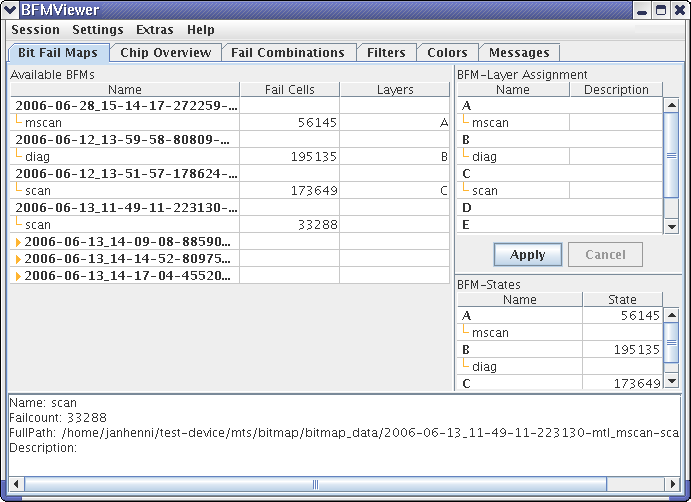

Bit Fail Maps
The Bit Fail Maps tab displays the available bit fail maps and lets you assign them to layers of the BFM Viewer.

The tab consists of three lists - Available BFMs, BFM Layer Assignments, and BFM States - and a status field at the bottom.
Available BFMs
This list contains all bit fail map files that are available to the BFM Viewer. Clicking the yellow triangle at the left expands a file to show the bit fail maps it contains.
The list consists of these columns:
- Name: The name of the file or bit fail map.
- Fails Cells: The number of failed cells that the bit fail map contains.
- Layers: The layer to which the bit fail map is assigned (if any).
The shortcut menu in this list contains these commands:
- Assign to Layer: This is a submenu. Choosing a layer from the submenu assigns the bit fail map or bit fail map file on which you have clicked to that layer.
- Fast View: Choosing this command removes all assigned bit fail maps from all layers and assigns the bit fail map or bit fail map file on which you have clicked to layer A. It then automatically loads the fail map or fail maps.
- Refresh: Choosing this command refreshes the list of available bit fail maps.
BFM Layer Assignments
This list contains the available layers for the chip overview display and shows which bitmaps have been assigned to which layer. Note that this is a preparatory list: It does not display the current state but allows you to arrange bit fail maps in layers before loading the entire setup.
The list contains these columns:
- Name: The names of the layers and the bit fail maps assigned to them. If an assigned bit fail map cannot be found (for example, because its file has been moved or deleted), a warning icon is displayed.
- Description: The description of the bit fail map (if any) from its file.
The shortcut menu in this list contains these commands:
- Find Location: Choosing this command highlights the bit fail map on which you have clicked in the Available BFMs list.
- Remove: Choosing this command removes the bit fail map on which you have clicked from the list of assigned bit fail maps. It remains in the Available BFMs list and can be reassigned at any time.
There are two buttons in the list:
- Apply: Clicking this button loads all specified bit fail maps into the BFM Viewer for analysis and display in the Chip Overview tab. This overwrites any currently loaded bit fail map data.
- Cancel: This button is active only when the BFM Viewer is busy loading bit fail map data. Clicking it cancels the loading process.
BFM States
The BFM States list displays, which bit fail maps are currently loaded into which layers for analysis and display. (It is filled by arranging the bit fail maps in the BFM Layer Assignments list and then clicking the Apply button.)
The list contains these columns:
- Name: The names of the layers and the assigned bit fail maps.
- State: While a layer is being loaded, this column displays the loading progress. If the layer is completely loaded, the column displays the total number of failed cells in it.
Status field
The status field displays some basic information about the selected bit fail map file or bit fail map.
Functional changes
- Introduced before SmarTest 6.3.2